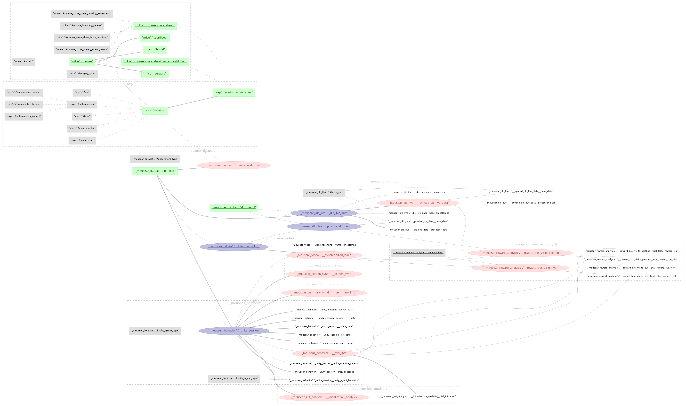

DataJoint Pipeline - Overview#
The DataJoint Pipeline is the data management and analysis backend for SCENE MouseAR experiments. It provides a structured, reproducible way to ingest raw experimental data (behavioral JSON, video, DLC pose estimates) into a relational MySQL database and compute derived analysis tables.
Architecture#
Raw Data Files DataJoint Schemas
───────────────── ──────────────────────────────────────────────
UnityData_*.json ──────────► mousear_dataset (session registry)
│
▼
mousear_behavior (behavioral data + trials)
│
┌──────────────────┤
│ │
▼ ▼
UnityData_*.mp4 ──► mousear_video mousear_screen_sync (TTL sync quality)
│
▼
DLC processor/ ──► mousear_dlc_live (pose estimation, synced to video)
pose files
Entity Relationship Diagram#
The current ERD for the full pipeline:

To regenerate or inspect the ERD interactively:
import datajoint as dj
from dj_pipeline.schemas import (
mousear_dataset, mousear_behavior,
mousear_video, mousear_dlc_live, mousear_screen_sync
)
# Full pipeline ERD
diagram = (
dj.Diagram(mousear_dataset)
+ dj.Diagram(mousear_behavior)
+ dj.Diagram(mousear_video)
+ dj.Diagram(mousear_dlc_live)
+ dj.Diagram(mousear_screen_sync)
)
diagram.draw()
# Single schema ERD
dj.Diagram(mousear_behavior).draw()
# Save to file
diagram.save('ERD.png')
Schema Modules#
Schema |
Type |
Description |
|---|---|---|
Registry |
Session metadata; links datasets to |
|
Core data |
Unity game behavioral data, agent inputs, trial extraction |
|
Video |
MP4 metadata, frame timestamps, step↔frame synchronization |
|
Pose |
DeepLabCutLive! pose estimates, synchronized to video frames |
|
Sync QC |
TTL barcode detection; validates hardware timing alignment |
Population Flow#
Tables are populated in dependency order. See Populating the Pipeline for the full guide.
Dataset.populate_from_files() ← scans RAW_DATA_PATH for JSON files
│
▼
SessionDataset.populate() ← links datasets to base_schemas Sessions
│
▼
UnitySession.populate() ← imports behavioral data from JSON
│
├──► TrialInfo.populate() ← computes trial boundaries
│
├──► VideoRecording.populate() ← imports video metadata
│ │
│ └──► SynchronizedVideo.populate() ← maps steps→frames
│
├──► ScreenSync.populate() ← computes TTL sync quality
│
└──► DlcLiveData.populate() ← imports DLC pose data
│
└──► SyncedDlcLiveData.populate() ← syncs DLC to video grid
Schema Prefix (TAG)#
All schema names are prefixed by the TAG environment variable. This allows running separate instances (e.g., test_mousear_behavior vs mousear_behavior) without conflicts:
export TAG="MyLab" # production: schema name = "MyLab_mousear_behavior"
export TAG="test" # testing: schema name = "test_mousear_behavior"